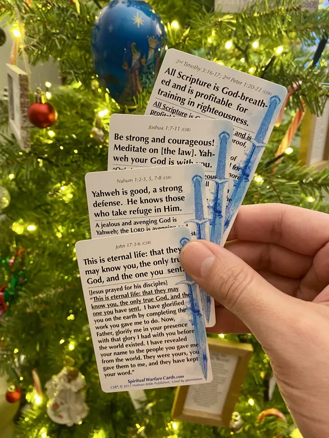
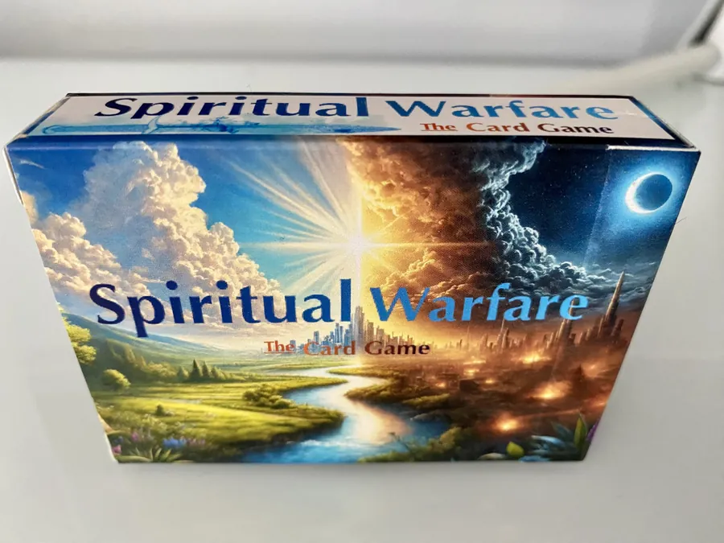
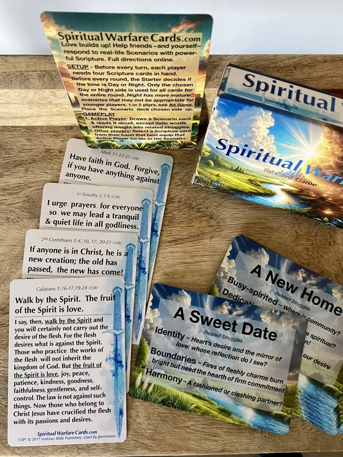
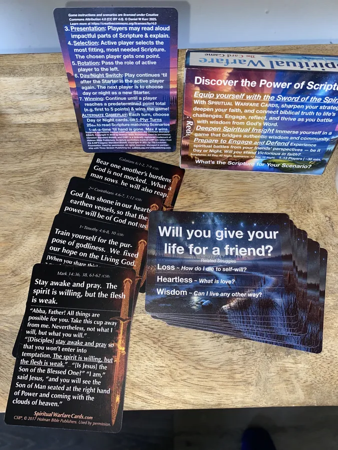

1. Read the scenario
The active player draws and reads the Scenario card aloud.
Loading the table…
Start with the headlines. Open a card to read the full passage or replace it.
New players or a quick game? Just read the big text on each card. Full instructions →
The active player draws and reads the Scenario card aloud.
Everyone else offers the Scripture card that best meets the struggle.
The active player chooses a response. That player receives one point.
Play it at the table
The Day and Night decks in one box, for 1–10 players. A good gift for Christmas, small groups and family game nights.
Buy on Amazon



Spotted a wording problem in any translation? Tell us on the workshop page — every edition here is improved by readers who know the language.